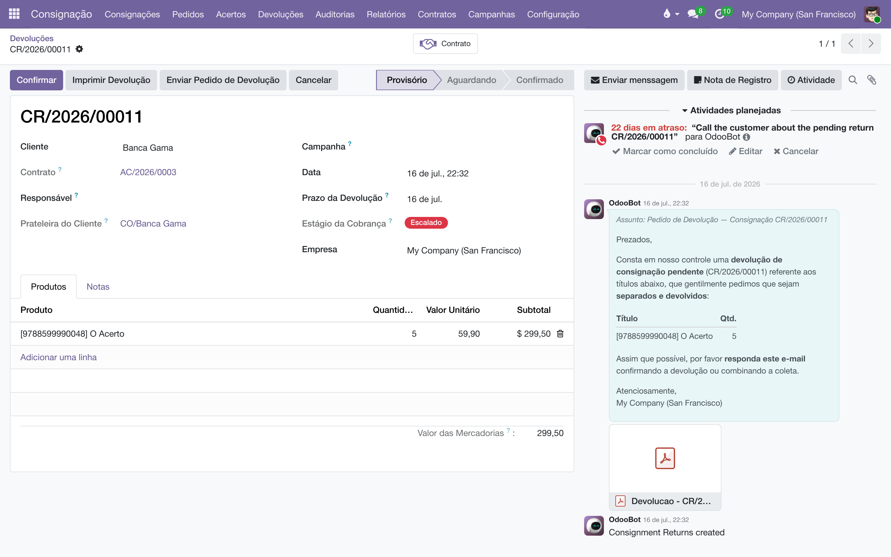

Remessas e retornos
Todo livro que vai para a prateleira de uma livraria — e todo livro que volta — passa por aqui, com documento próprio, número próprio e sem nunca virar venda antes da hora.
Visão geral
Este módulo cuida da logística da consignação: o caminho físico dos livros entre o armazém e as prateleiras dos clientes. Ele trabalha com dois documentos e dá a cada fluxo do armazém uma numeração própria, para ninguém confundir consignação com venda:
| Documento / série | O que é |
|---|---|
| Pedido C (C00001, C00002…) | O pedido de consignação: um pedido comercial com o mesmo fluxo de um pedido de venda, mas que não é uma venda — recebe o código C em vez do S, fica fora do aplicativo Vendas e dos relatórios de vendas, e nunca fatura. É por ele que os livros saem do armazém rumo à prateleira (abertura de consignação ou reposição). |
| CR/ (CR/2026/00001…) | O documento comercial de devolução (também chamado de "puxada"): o pedido para a livraria devolver livros. É pré-logístico — confirmar não mexe em estoque; a mercadoria só se move quando o documento é liberado para a logística. |
| COM/ | As transferências do armazém ligadas à consignação: a saída do Pedido C e as remessas para a prateleira. "COM" = consignação em logística. |
| RET/ | As transferências de retorno: prateleira → armazém. Um retorno de consignação é um retorno de mercadoria, não uma transferência interna qualquer — por isso tem tipo de operação e numeração próprios. |
A baixa da venda no acerto tem série própria, ACERTO/, e é documentada no manual do acerto. A série REM/ pertence ao documento fiscal de remessa (a nota), tratada no manual fiscal.
Uma regra vale para tudo: nenhum movimento escreve no estoque diretamente. Cada operação gera uma transferência de verdade, que o armazém confirma e valida — então o histórico do estoque conta a história completa.
Configuração
- Tipos de operação do armazém — os tipos COM/ (remessa e entrega de consignação) e RET/ (retorno) são criados automaticamente no primeiro uso. Dá para conferi-los (ou trocá-los) em , bloco Operações de Estoque de Consignação, campos Operação de Remessa de Consignação e Operação de Retorno de Consignação.
- Grupos de acesso — os mesmos do módulo de contratos: Consignação / Usuário opera; Administrador também exclui.
- Pré-requisito — o cliente precisa ter um contrato de consignação ativo. Sem contrato ativo, nenhum movimento é aceito.
Abrir uma consignação: o Pedido C
A primeira leva de livros para uma livraria nova (ou uma remessa avulsa decidida pelo comercial) é um Pedido C de abertura:
- Acesse .
- Escolha o Cliente. O campo Contrato de Consignação é preenchido sozinho a partir do cliente; o Tipo de Consignação vem como Abertura de Consignação (um pedido criado à mão é sempre uma abertura — as reposições nascem do acerto).
- Adicione os títulos e quantidades nas linhas, como num pedido de venda comum.
- Clique em Confirmar. A entrega é criada com número COM/ — no tipo de operação de consignação, nunca no "Pedidos de entrega" genérico do armazém.
- O armazém separa e valida a transferência. Os livros saem do estoque e entram na prateleira do cliente.

Um Pedido C nunca fatura. O botão de criar fatura não aparece, o status de faturamento fica sempre em "Nada a faturar", e qualquer tentativa por outro caminho é barrada com a explicação: os livros ainda são nossos, na prateleira do cliente; eles viram receita no acerto — que é quem emite a nota e a fatura, pelo que de fato vendeu. Faturar aqui registraria receita por livros que ninguém comprou, e registraria duas vezes (aqui e no acerto).
Os Pedidos C também ficam fora do aplicativo Vendas: não aparecem nas cotações, nos pedidos, na lista "a faturar" nem no relatório Análise de Vendas. O único lugar onde você os vê é — de propósito, para os números de venda nunca contarem consignação como receita.
Pedir uma devolução: o CR
O CR é o documento que a equipe usa para cobrar a volta de livros. Ele nasce de uma operação de acerto (coluna Devolução — veja o manual do acerto) ou do botão Recolher Tudo do contrato; a lista em não cria documentos, só acompanha os que existem.
O fluxo de um CR tem dois momentos, de propósito:
- Confirmar — valida o documento comercialmente e o deixa Aguardando. Nada se move ainda: é a fase de combinar com a livraria (o CR pode ser enviado por e-mail e cobrado pela régua).
- Liberar para Logística — quando a devolução está combinada, este botão entrega o trabalho ao armazém: cria a transferência RET/ (prateleira → armazém), já reservada, e o CR passa a Confirmado.
- O armazém valida a transferência quando os livros chegam. O botão inteligente Transferência abre o documento do estoque a qualquer momento.

Errou ou o cliente desistiu? Cancelar desfaz o CR (e cancela a transferência, se ainda não foi validada). Um CR Aguardando ou cancelado pode voltar com Redefinir para Provisório.
Recolher tudo (encerramento)
Para trazer de volta a prateleira inteira — o passo obrigatório antes de encerrar um contrato:
- Abra o contrato em .
- Clique em Recolher Tudo. O sistema monta um CR com todos os títulos e quantidades que estão na prateleira.
- Siga o fluxo normal do CR: Confirmar, depois Liberar para Logística, e o armazém valida a RET/.
- Com a prateleira zerada, o contrato pode ser encerrado.
Se a prateleira já estiver vazia, o botão avisa: "A prateleira já está vazia; nada a recolher."
Renovação simbólica
A legislação limita quanto tempo uma remessa de consignação pode ficar em aberto. Quando o prazo aperta e os livros vão continuar na livraria, faz-se uma renovação simbólica: um documento que renova o "relógio fiscal" da prateleira sem mover nenhum livro.
- No contrato ativo, clique em Renovação Simbólica.
- O documento é criado e concluído na hora (não há logística), e o registro fica no histórico do contrato: "Renovação simbólica CR/… registrada (sem movimento físico)."
As duas notas fiscais que se compensam na renovação (retorno simbólico + nova remessa) são assunto do módulo fiscal; aqui fica só o registro da operação.
Campanhas (listas de títulos prontas)
Uma campanha é uma lista pré-montada de títulos e quantidades — o kit que o comercial repete em vários clientes. Em você cria e mantém as listas; num CR em rascunho, escolha a Campanha e clique em Carregar da Campanha para preencher as linhas de uma vez.
As campanhas ganham muito mais poder no módulo de acerto — canal de vendas, período de vigência, alvo por prateleira e relatórios de cobertura. Veja Campanhas no manual do acerto.
Relatórios: onde estão os meus livros?
Na Prateleira
mostra tudo que está consignado agora, agrupado por cliente — com visões de lista, pivô e gráfico, e o eixo Canal de Vendas para ler por equipe.
Inventário
é a contagem das prateleiras: digite (ou importe de planilha) a quantidade contada por título em cada cliente. Nada se move até você clicar em Aplicar — a contagem fica como ajuste em rascunho.
Razão
é o extrato da consignação: cada entrada (+) e saída (−) que tocou uma prateleira, com o Saldo Corrente por cliente e livro. Filtre por Entrada na prateleira (+) / Saída da prateleira (−), agrupe por cliente, livro ou mês.
No cadastro do produto
No formulário de cada livro, ao lado do "Em mãos" nativo, dois botões respondem "onde está este título?": Estoque (o que está no armazém) e Consignado (o que está nas prateleiras, agrupado por cliente).

Regras que o sistema garante
| Regra | Por quê |
|---|---|
| Movimento exige contrato ativo. Cliente sem contrato: "O cliente … não possui contrato de consignação." Contrato suspenso: "O contrato … precisa estar ativo para registrar movimentos." | A prateleira pertence ao contrato; sem ele não há onde pôr (nem de onde tirar) os livros. |
| Não se confirma documento sem linhas ("Adicione ao menos uma linha de produto antes de confirmar."). | Um movimento vazio não movimenta nada. |
| Remessas saem em COM/ e retornos em RET/ — nunca em WH/OUT. | Para o armazém, uma remessa de consignação na fila de entregas de venda parece uma venda que esqueceram de faturar. Séries separadas deixam cada fila dizer a verdade — e permitem priorizar vendas sobre consignação. |
| Pedido C nunca fatura e fica fora de todos os relatórios de vendas. | Consignação não é receita. A receita nasce no acerto, pelo que de fato vendeu. |
| Renovação simbólica não gera transferência. | É um ato fiscal, não físico: os livros não saem do lugar. |
| Valor das linhas não é preço de venda. O campo Valor Unitário (e o Valor das Mercadorias do documento) é o valor de mercadoria para a nota da remessa — vem da lista de preços do contrato, mas não é receita. | O documento carrega valor para fins fiscais; a venda, com preço e desconto de verdade, acontece só no acerto. |
Perguntas frequentes
Por que não consigo criar um documento na lista de Devoluções?
Porque devoluções nascem de uma operação de acerto ou do Recolher Tudo do contrato — a lista existe para acompanhar e processar, não para criar. Assim toda devolução fica amarrada à operação que a motivou.
Confirmei o CR e o estoque não mudou. Está quebrado?
Não — está no desenho. Confirmar é o passo comercial (o documento fica Aguardando enquanto se combina com a livraria). O estoque só reserva quando você clica em Liberar para Logística, e só muda quando o armazém valida a transferência RET/.
Como reponho a prateleira de um cliente?
Pelo acerto: a coluna Reposição da operação gera um Pedido C de reposição automaticamente. Criar um Pedido C à mão serve para a abertura (primeira remessa) ou remessas avulsas.
O valor do Pedido C entra no meu faturamento?
Não. Ele fica fora da Análise de Vendas por construção — nenhum relatório de vendas conta consignação. O que entra no faturamento é a venda S gerada no acerto.
- Acordos de consignação — o contrato e a prateleira que estes movimentos alimentam.
- Acerto de consignação — onde a reposição e a devolução são decididas, e a cobrança das devoluções.
- Fiscal da consignação — a nota de remessa do Pedido C e os CFOPs de cada operação.